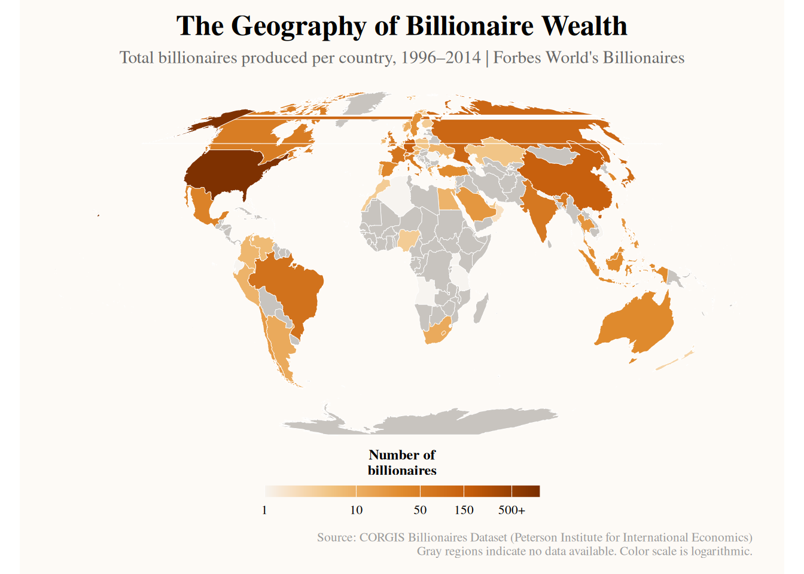
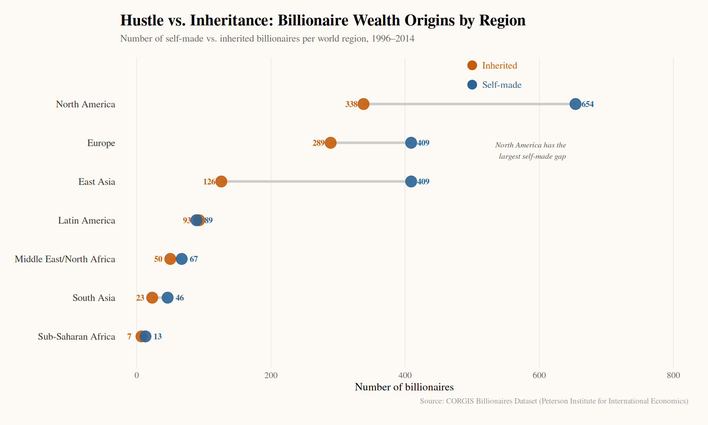
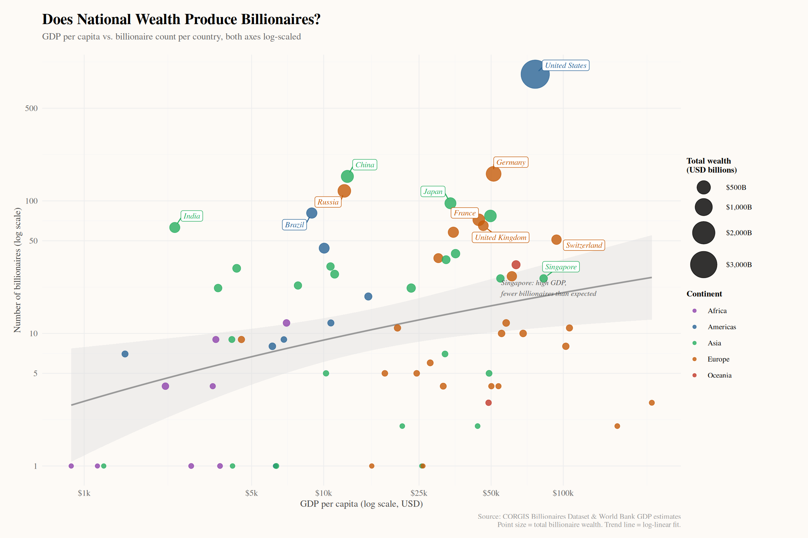

#Read all three CSV files into R as data frames
billionaires_raw <- read.csv("billionaires.csv")
forbes_2023_raw <- read.csv("Billionaires Statistics Dataset.csv")
countries <- read.csv("Countries.csv")They Got Billions. We Got Data
Project Overview
If money doesn’t buy happiness, why are billionaires still winning? Let’s break it down. This project explores global billionaire wealth using a structured database built in DuckDB, focusing on three key questions:
- Where do billionaires come from? We analyze which countries produce the most billionaires and examine whether a country’s GDP plays a role in that.
- How is wealth created? We compare self-made vs. inherited wealth across different regions and industries to see if opportunity or legacy matters more.
- Who becomes a billionaire? We study differences in gender and age between self-made and inherited billionaires to understand who is most likely to build or inherit extreme wealth.
Simple idea: not just who is rich, but why they are rich.
—————————————————————————
Accessing data
—————————————————————————
Designing the database
# Delete any stale database file left over from a previous run.
# This is essential for reproducibility: if an old .duckdb file exists it
# will already contain tables created by dbWriteTable() (no DDL, no PRIMARY
# KEY), which causes two problems when we re-run:
# 1. CREATE TABLE fails with "table already exists"
# 2. FOREIGN KEY creation fails because the old table has no PK/UNIQUE
# Wiping the file guarantees a clean slate on every render.
db_path <- "billionaires_db.duckdb"
wal_path <- paste0(db_path, ".wal") # DuckDB write-ahead log (may not exist)
if (file.exists(db_path)) file.remove(db_path)[1] TRUEif (file.exists(wal_path)) file.remove(wal_path)
con <- dbConnect(duckdb::duckdb(), dbdir = db_path)# Step 1: Rename columns and enforce R-level types before loading into DuckDB.
# Each field is explicitly selected, renamed to snake_case, and cast to the
# appropriate R type so that DuckDB inherits a clean, predictable schema.
billionaires <- billionaires_raw |>
select(
name,
rank,
year,
company_name = company.name,
sector = company.sector,
company_relationship = company.relationship,
company_type = company.type,
age = demographics.age,
gender = demographics.gender,
country = location.citizenship,
region = location.region,
country_gdp = location.gdp,
worth_billions = wealth.worth.in.billions,
inherited = wealth.how.inherited,
industry = wealth.how.industry,
was_founder = wealth.how.was.founder, # "yes"/"no" string
wealth_category = wealth.how.category,
from_emerging_market = wealth.how.from.emerging # "yes"/"no" string
)|>
# Cast each column to its intended type so the DuckDB schema is accurate
mutate(
rank = as.integer(rank),
year = as.integer(year),
age = as.integer(age),
country_gdp = as.double(country_gdp),
worth_billions = as.double(worth_billions),
# Standardise free-text boolean flags to consistent lowercase strings
was_founder = tolower(trimws(was_founder)),
from_emerging_market = tolower(trimws(from_emerging_market))
)
forbes_2023 <- forbes_2023_raw |>
select(
rank,
name = personName,
worth_billions_2023 = finalWorth, # raw value is in millions; kept as-is
industry = category,
country,
city,
wealth_source = source,
industries,
self_made = selfMade, # logical TRUE/FALSE from R
gender,
age,
citizenship_country = countryOfCitizenship
)|>
mutate(
rank = as.integer(rank),
worth_billions_2023 = as.double(worth_billions_2023),
age = as.integer(age),
self_made = as.logical(self_made)
)
# countries was loaded directly from a lookup CSV; cast types explicitly
countries <- countries |>
mutate(
gdp_per_capita = as.double(gdp_per_capita)
) |>
distinct(country, .keep_all = TRUE)# Step 2: Define the relational schema using explicit CREATE TABLE DDL.
#
# This is the key database-design step:
# - Field types are declared (VARCHAR, INTEGER, DOUBLE, BOOLEAN) so DuckDB
# stores data in the intended format, not whatever it infers from the CSV.
# - NOT NULL constraints are applied to every field that must always have a
# value for the row to be meaningful (primary identifiers, key measures).
# - A PRIMARY KEY is set on countries.country, the anchor of the schema.
# - FOREIGN KEY references document the join paths between tables, making
# the relational design explicit and self-describing.
#
# Tables are dropped first so the chunk is idempotent (safe to re-run).
# Drop in dependency order (child tables before parent)
# Drop in dependency order (child tables before parent)
dbExecute(con, "DROP TABLE IF EXISTS billionaires")[1] 0dbExecute(con, "DROP TABLE IF EXISTS forbes_2023")[1] 0dbExecute(con, "DROP TABLE IF EXISTS countries")[1] 0# Parent / lookup table, one row per country
dbExecute(con, "
CREATE TABLE countries (
country VARCHAR NOT NULL, -- ISO country name; anchor for JOINs
continent VARCHAR,
region VARCHAR,
gdp_per_capita DOUBLE, -- World Bank estimate (USD)
PRIMARY KEY (country)
)
")[1] 0# Core historical billionaires table (CORGIS dataset, 1996–2014)
dbExecute(con, "
CREATE TABLE billionaires (
name VARCHAR NOT NULL, -- Billionaire's full name
rank INTEGER, -- Forbes rank in the given year
year INTEGER NOT NULL, -- Snapshot year (1996, 2001, 2014)
company_name VARCHAR,
sector VARCHAR,
company_relationship VARCHAR, -- e.g. founder, chairman, CEO
company_type VARCHAR, -- e.g. private, public
age INTEGER,
gender VARCHAR,
country VARCHAR, -- joins to countries.country
region VARCHAR,
country_gdp DOUBLE, -- GDP embedded in source CSV
worth_billions DOUBLE NOT NULL, -- Net worth in USD billions
inherited VARCHAR, -- e.g. 'not inherited', 'father'
industry VARCHAR,
was_founder VARCHAR, -- 'yes' / 'no' (string flag)
wealth_category VARCHAR,
from_emerging_market VARCHAR -- 'yes' / 'no' (string flag)
)
")[1] 0# 2023 Forbes snapshot (Kaggle dataset , single-year cross-section)
dbExecute(con, "
CREATE TABLE forbes_2023 (
rank INTEGER,
name VARCHAR NOT NULL, -- Billionaire's full name
worth_billions_2023 DOUBLE, -- Net worth in USD billions (2023)
industry VARCHAR,
country VARCHAR, -- Country of residence
city VARCHAR,
wealth_source VARCHAR, -- Primary source of wealth
industries VARCHAR, -- Broader industry categories
self_made BOOLEAN, -- TRUE = self-made, FALSE = inherited
gender VARCHAR,
age INTEGER,
citizenship_country VARCHAR NOT NULL -- joins to countries.country
)
")[1] 0# Step 3: Populate the tables using dbAppendTable().
# Because the schema is already defined above, dbAppendTable() inserts data
# into the pre-existing columns rather than inferring a new schema , this is
# the correct workflow when using explicit DDL.
dbAppendTable(con, "countries", countries)
dbAppendTable(con, "billionaires", billionaires)
dbAppendTable(con, "forbes_2023", forbes_2023)# Step 4: Verify the schema and data load.
# DESCRIBE returns each column's name, type, nullability, key role, and
# default value, confirming that the DDL was applied as intended.
# Inspect column-level schema for each table
dbGetQuery(con, "DESCRIBE billionaires") column_name column_type null key default extra
1 name VARCHAR NO <NA> <NA> <NA>
2 rank INTEGER YES <NA> <NA> <NA>
3 year INTEGER NO <NA> <NA> <NA>
4 company_name VARCHAR YES <NA> <NA> <NA>
5 sector VARCHAR YES <NA> <NA> <NA>
6 company_relationship VARCHAR YES <NA> <NA> <NA>
7 company_type VARCHAR YES <NA> <NA> <NA>
8 age INTEGER YES <NA> <NA> <NA>
9 gender VARCHAR YES <NA> <NA> <NA>
10 country VARCHAR YES <NA> <NA> <NA>
11 region VARCHAR YES <NA> <NA> <NA>
12 country_gdp DOUBLE YES <NA> <NA> <NA>
13 worth_billions DOUBLE NO <NA> <NA> <NA>
14 inherited VARCHAR YES <NA> <NA> <NA>
15 industry VARCHAR YES <NA> <NA> <NA>
16 was_founder VARCHAR YES <NA> <NA> <NA>
17 wealth_category VARCHAR YES <NA> <NA> <NA>
18 from_emerging_market VARCHAR YES <NA> <NA> <NA>dbGetQuery(con, "DESCRIBE forbes_2023") column_name column_type null key default extra
1 rank INTEGER YES <NA> <NA> <NA>
2 name VARCHAR NO <NA> <NA> <NA>
3 worth_billions_2023 DOUBLE YES <NA> <NA> <NA>
4 industry VARCHAR YES <NA> <NA> <NA>
5 country VARCHAR YES <NA> <NA> <NA>
6 city VARCHAR YES <NA> <NA> <NA>
7 wealth_source VARCHAR YES <NA> <NA> <NA>
8 industries VARCHAR YES <NA> <NA> <NA>
9 self_made BOOLEAN YES <NA> <NA> <NA>
10 gender VARCHAR YES <NA> <NA> <NA>
11 age INTEGER YES <NA> <NA> <NA>
12 citizenship_country VARCHAR NO <NA> <NA> <NA>dbGetQuery(con, "DESCRIBE countries") column_name column_type null key default extra
1 country VARCHAR NO PRI <NA> <NA>
2 continent VARCHAR YES <NA> <NA> <NA>
3 region VARCHAR YES <NA> <NA> <NA>
4 gdp_per_capita DOUBLE YES <NA> <NA> <NA># Confirm row counts match the source data frames
dbGetQuery(con, "
SELECT 'billionaires' AS table_name, COUNT(*) AS row_count FROM billionaires
UNION ALL
SELECT 'forbes_2023' AS table_name, COUNT(*) AS row_count FROM forbes_2023
UNION ALL
SELECT 'countries' AS table_name, COUNT(*) AS row_count FROM countries
") table_name row_count
1 billionaires 2614
2 forbes_2023 2640
3 countries 197#Preview the first 5 rows of each table
dbGetQuery(con, "SELECT * FROM billionaires LIMIT 5") name rank year company_name sector company_relationship
1 Bill Gates 1 1996 Microsoft Software founder
2 Bill Gates 1 2001 Microsoft Software founder
3 Bill Gates 1 2014 Microsoft Software founder
4 Warren Buffett 2 1996 Berkshire Hathaway Finance founder
5 Warren Buffett 2 2001 Berkshire Hathaway Finance founder
company_type age gender country region country_gdp
1 new 40 male United States North America 8.10e+12
2 new 45 male United States North America 1.06e+13
3 new 58 male United States North America 0.00e+00
4 new 65 male United States North America 8.10e+12
5 new 70 male United States North America 1.06e+13
worth_billions inherited industry was_founder wealth_category
1 18.5 not inherited Technology-Computer true New Sectors
2 58.7 not inherited Technology-Computer true New Sectors
3 76.0 not inherited Technology-Computer true New Sectors
4 15.0 not inherited Consumer true Traded Sectors
5 32.3 not inherited Consumer true Traded Sectors
from_emerging_market
1 true
2 true
3 true
4 true
5 truedbGetQuery(con, "SELECT * FROM forbes_2023 LIMIT 5") rank name worth_billions_2023 industry
1 1 Bernard Arnault & family 211000 Fashion & Retail
2 2 Elon Musk 180000 Automotive
3 3 Jeff Bezos 114000 Technology
4 4 Larry Ellison 107000 Technology
5 5 Warren Buffett 106000 Finance & Investments
country city wealth_source industries self_made
1 France Paris LVMH Fashion & Retail FALSE
2 United States Austin Tesla, SpaceX Automotive TRUE
3 United States Medina Amazon Technology TRUE
4 United States Lanai Oracle Technology TRUE
5 United States Omaha Berkshire Hathaway Finance & Investments TRUE
gender age citizenship_country
1 M 74 France
2 M 51 United States
3 M 59 United States
4 M 78 United States
5 M 92 United StatesdbGetQuery(con, "SELECT * FROM countries LIMIT 5") country continent region gdp_per_capita
1 Afghanistan Asia South Asia 502
2 Albania Europe Southern Europe 6494
3 Algeria Africa Northern Africa 3691
4 Andorra Europe Southern Europe 43047
5 Angola Africa Sub-Saharan Africa 2798Relational Schema
The three tables are linked by the country column as a foreign key:
billionaires countries forbes_2023 ────────────── ────────────── ────────────── name country ◄─── FK ───► citizenship_country country ──── FK ────► continent name region region country ──── FK ────► countries.country worth_billions gdp_per_capita worth_billions_2023 inherited self_made industry industry gender gender year age
—————————————————————————
Querying data using SQL
Query 1 : Which Countries Produce the Most Billionaires?
Some countries export oil, some export tech and some apparently export billionaires. This query counts how many billionaires each country has produced across all years in the dataset, then ranks them from highest to lowest. We use RANK()as a window function to assign a rank based on billionaire count.
query1 <- dbGetQuery(con, "
SELECT
country,
COUNT(*) AS billionaire_count,
ROUND(SUM(worth_billions), 1) AS total_worth_billions,
ROUND(AVG(worth_billions), 2) AS avg_worth_billions,
RANK() OVER (ORDER BY COUNT(*) DESC) AS country_rank
FROM billionaires
WHERE country IS NOT NULL
AND country != ''
GROUP BY country
ORDER BY billionaire_count DESC
LIMIT 20
")
query1 country billionaire_count total_worth_billions avg_worth_billions
1 United States 903 3542.1 3.92
2 Germany 160 671.0 4.19
3 China 153 377.1 2.46
4 Russia 119 434.9 3.65
5 Japan 96 280.3 2.92
6 Brazil 81 224.7 2.77
7 Hong Kong 77 338.2 4.39
8 France 72 336.9 4.68
9 United Kingdom 65 190.6 2.93
10 India 63 210.8 3.35
11 Italy 58 220.3 3.80
12 Canada 53 175.3 3.31
13 Switzerland 51 168.6 3.31
14 Mexico 44 202.6 4.60
15 Taiwan 40 112.0 2.80
16 Spain 37 142.4 3.85
17 South Korea 36 86.8 2.41
18 Australia 33 93.2 2.82
19 Turkey 32 65.4 2.04
20 Indonesia 31 80.6 2.60
country_rank
1 1
2 2
3 3
4 4
5 5
6 6
7 7
8 8
9 9
10 10
11 11
12 12
13 13
14 14
15 15
16 16
17 17
18 18
19 19
20 20Finding: The United States isn’t just winning , it’s playing a completely different game. With 903 billionaires produced between 1996 and 2014, the US has nearly six times more than Germany in second place (160), and almost six times more than China in third (153). If billionaire production were a sport, everyone else would be competing for second place. But raw count isn’t the whole story. Germany actually beats the US on average worth per billionaire, \(4.19B\) vs \(3.92B\) , meaning German billionaires tend to be individually richer even though there are far fewer of them. France (\(4.68B\)) and Hong Kong (\(4.39B\)) show the same pattern: smaller clubs, wealthier members. China’s position is particularly interesting. It ranks third in billionaire count but its average worth of \(2.46B\) is one of the lowest in the top 10 , suggesting China produced a large volume of billionaires during this period who were, relatively speaking, just getting started. Given China’s explosive economic growth after 2000, many of these fortunes were likely still being built when the dataset ends in 2014. At the bottom of the top 20, countries like Turkey (\(2.04B\) average), Indonesia (\(2.60B\)), and South Korea (\(2.41B\)) show emerging economies beginning to generate serious wealth. The overall picture is clear: the United States dominates in volume, Europe dominates in individual wealth, and Asia is the story of rapid growth.
Query 2 : Self-Made vs. Inherited Wealth by Region
So after seeing which countries ‘export’ billionaires, the next question is, are they self-made, or just well-made by their families. This query breaks down billionaires by whether their wealth was inherited or self-made, grouped by world region. We calculate the average net worth and total count for each combination to see which regions produce more inherited vs. entrepreneurial wealth.
query2 <- dbGetQuery(con, "
SELECT
region,
inherited,
COUNT(*) AS billionaire_count,
ROUND(AVG(worth_billions), 2) AS avg_worth_billions,
ROUND(SUM(worth_billions), 1) AS total_worth_billions,
ROUND(
COUNT(*) * 100.0 / SUM(COUNT(*)) OVER (PARTITION BY region),
1
) AS pct_of_region
FROM billionaires
WHERE region IS NOT NULL
AND region != '0'
AND inherited IS NOT NULL
AND inherited != ''
GROUP BY region, inherited
ORDER BY region, billionaire_count DESC
")
query2 region inherited billionaire_count
1 East Asia not inherited 409
2 East Asia father 94
3 East Asia 3rd generation 20
4 East Asia spouse/widow 7
5 East Asia 4th generation 3
6 East Asia 5th generation or longer 2
7 Europe not inherited 409
8 Europe father 144
9 Europe 3rd generation 62
10 Europe 4th generation 47
11 Europe spouse/widow 18
12 Europe 5th generation or longer 18
13 Latin America not inherited 89
14 Latin America father 66
15 Latin America 3rd generation 16
16 Latin America spouse/widow 6
17 Latin America 4th generation 4
18 Latin America 5th generation or longer 1
19 Middle East/North Africa not inherited 67
20 Middle East/North Africa father 43
21 Middle East/North Africa 3rd generation 6
22 Middle East/North Africa spouse/widow 1
23 North America not inherited 654
24 North America father 195
25 North America 3rd generation 97
26 North America spouse/widow 25
27 North America 4th generation 11
28 North America 5th generation or longer 10
29 South Asia not inherited 46
30 South Asia father 12
31 South Asia 3rd generation 6
32 South Asia 4th generation 3
33 South Asia spouse/widow 2
34 Sub-Saharan Africa not inherited 13
35 Sub-Saharan Africa father 4
36 Sub-Saharan Africa 3rd generation 3
avg_worth_billions total_worth_billions pct_of_region
1 2.83 1157.9 76.4
2 3.59 337.0 17.6
3 2.18 43.7 3.7
4 2.20 15.4 1.3
5 2.00 6.0 0.6
6 1.05 2.1 0.4
7 3.69 1510.9 58.6
8 4.49 646.2 20.6
9 3.74 231.6 8.9
10 2.60 122.1 6.7
11 5.01 90.1 2.6
12 2.84 51.1 2.6
13 3.57 317.5 48.9
14 2.77 182.5 36.3
15 2.11 33.7 8.8
16 4.40 26.4 3.3
17 3.73 14.9 2.2
18 1.10 1.1 0.5
19 2.87 192.2 57.3
20 2.62 112.6 36.8
21 2.28 13.7 5.1
22 1.10 1.1 0.9
23 3.66 2391.0 65.9
24 4.65 906.3 19.7
25 3.46 336.1 9.8
26 5.08 126.9 2.5
27 3.05 33.6 1.1
28 2.75 27.5 1.0
29 2.94 135.1 66.7
30 4.48 53.8 17.4
31 2.37 14.2 8.7
32 3.60 10.8 4.3
33 3.60 7.2 2.9
34 4.05 52.6 65.0
35 2.95 11.8 20.0
36 4.57 13.7 15.0Finding: The ultimate question did they build it or just get the password to the family bank account? The data has answers, and they’re surprisingly different depending on where in the world you look. North America is the land of the self-made. Nearly 66% of North American billionaires built their wealth from scratch, with 654 self-made billionaires generating \(2,391B\) in total wealth. But here’s the twist the 195 who inherited from their fathers average \(4.65B\) each, compared to $3.66B for the self-made crowd. Old money, it turns out, is still very good money. East Asia tells a hustle story. Over 76% of East Asian billionaires are self-made the highest entrepreneurial rate among major regions. China, Japan, and South Korea drove an era of first-generation wealth creation that the data captures clearly. The father-inherited group in East Asia averages \(3.59B\), notably higher than the self-made average of \(2.83B\), suggesting family businesses that were passed down tend to be the larger, more established ones. Europe is where old money lives. Europe has the most balanced split about 59% self-made and 41% inherited across various generations. What stands out is Europe’s spouse/widow category, which averages \(5.01B\) per person the highest of any group in any region. European dynastic wealth runs deep, and when it’s passed through marriage it tends to be the largest fortunes of all. Third and fourth generation billionaires in Europe are also notably common compared to other regions, with 62 third-generation and 47 fourth-generation entries. The Middle East keeps it in the family. With 57% self-made and 37% inherited from fathers, the Middle East shows a strong family business culture. The relatively small number of third-generation or longer entries suggests that most of this wealth is still relatively young concentrated in the first or second generation. Latin America and South Asia lean self-made but inheritance runs close behind. Latin America sits at 49% self-made vs 36% father-inherited,the closest split of any region, suggesting a strong culture of family-run empires being passed down. South Asia tells a similar story with 67% self-made, but the 12 father-inherited billionaires average a hefty \(4.48B\) , nearly \(1.5B\) more than the self-made average. Sub-Saharan Africa is small but striking. Only 20 billionaires total, but 65% are self-made and they average \(4.05B\) each, higher than the self-made average in North America. Africa’s billionaire class is small, young, and building fast. The bottom line: self-made billionaires dominate every region of the world but inherited billionaires are almost always individually wealthier. Building it yourself gets you in the club, inheriting it gets you the VIP table. You can grind your way in but some people are born with reservations
Query 3 : Top 5 Industries by Total Billionaire Wealth
So now that we know who is rich let’s figure out what they actually do. Time to answer the most important question did we choose the wrong major? This query identifies which industries have generated the most total billionaire wealth across the dataset. We use SUM to aggregate worth, then filter to the top 5 using LIMIT. We also include average worth and count to show whether an industry is dominant because of many billionaires or a few ultra-wealthy ones.
query3 <- dbGetQuery(con, "
SELECT
industry,
COUNT(*) AS billionaire_count,
ROUND(SUM(worth_billions), 1) AS total_worth_billions,
ROUND(AVG(worth_billions), 2) AS avg_worth_billions,
ROUND(MAX(worth_billions), 2) AS max_worth_billions
FROM billionaires
WHERE industry IS NOT NULL
AND industry != ''
AND industry != 'umbrella'
GROUP BY industry
ORDER BY total_worth_billions DESC
LIMIT 5
")
query3 industry billionaire_count total_worth_billions avg_worth_billions
1 Consumer 471 1756.3 3.73
2 Retail, Restaurant 281 1161.3 4.13
3 Technology-Computer 208 1015.2 4.88
4 Media 219 852.5 3.89
5 Real Estate 280 844.2 3.01
max_worth_billions
1 58.2
2 64.0
3 76.0
4 72.0
5 38.0Finding: If you want to become a billionaire, what major should we choose? The data from 1996–2014 gives a pretty clear answer.
Consumer goods is the undisputed champion. With 471 billionaires generating \(1,756.3B\) in total wealth, this industry sits comfortably at the top. These are the people selling you food, clothing, and everyday products. It turns out that selling things billions of people buy every single day is an extremely reliable path to extreme wealth. Retail and restaurants are not far behind. 281 billionaires generated \(1,161.3B\) in total wealth, with an average of \(4.13B\) per person which is actually higher than consumer goods. This is the industry of people who figured out scale. Build the right model, replicate it everywhere, and the money follows. Technology is where the biggest individual fortunes live. Tech has fewer billionaires than consumer or retail, but its average worth of $4.88B is the highest of any industry here. Tech does not just create lots of billionaires. It creates the wealthiest ones. Media is the quiet overachiever. 219 billionaires, \(852.5B\) in total wealth, and a max worth of \(72B\) which is second only to tech. Media moguls build empires that last decades, which explains why the fortunes at the very top are so large. Real estate is steady but not spectacular. It produces a lot of billionaires but the average worth of \(3.01B\) is the lowest in this group. Real estate wealth builds slowly and steadily over time rather than through explosive growth. The simple takeaway: consumer goods and retail create the most billionaires. Technology creates the richest ones.
While we were lowkey stressing about whether it’s too late to change our majors as rising seniors… turns out, we might actually be on the right path. So for the Upcoming freshmens our official recommendation is: Computer Science, Business, Finance, Marketing and, if possible, a minor in ‘having rich parents.’
Query 4 : JOIN: Does a Country’s GDP Predict Its Billionaire Count?
Okay, so now we’re getting into the real economics question does being a rich country automatically mean you produce rich people? And I guess at some point all three of us (Tasnim, Tahana, and Professor Abhishek) have wondered should I just move to a richer country? I mean, that’s kind of why we’re here, right? :)
This is our JOIN query. We join the billionaires table with the countries lookup table on the country name to bring in GDP per capita and continent. This lets us ask: do wealthier countries (by GDP per capita) produce more billionaires, or is raw economic size what matters?
query4 <- dbGetQuery(con, "
SELECT
b.country,
c.continent,
c.region,
c.gdp_per_capita,
COUNT(b.name) AS billionaire_count,
ROUND(SUM(b.worth_billions), 1) AS total_worth_billions,
ROUND(AVG(b.worth_billions), 2) AS avg_worth_billions,
ROUND(
COUNT(b.name) * 1.0 / (c.gdp_per_capita / 1000),
4
) AS billionaires_per_1k_gdp
FROM billionaires b
LEFT JOIN countries c
ON LOWER(TRIM(b.country)) = LOWER(TRIM(c.country))
WHERE c.gdp_per_capita IS NOT NULL
AND b.country IS NOT NULL
GROUP BY b.country, c.continent, c.region, c.gdp_per_capita
ORDER BY billionaire_count DESC
LIMIT 25
")
query4 country continent region gdp_per_capita
1 United States Americas North America 76399
2 Germany Europe Western Europe 51204
3 China Asia Eastern Asia 12556
4 Russia Europe Eastern Europe 12195
5 Japan Asia Eastern Asia 33815
6 Brazil Americas South America 8917
7 Hong Kong Asia Eastern Asia 49661
8 France Europe Western Europe 44408
9 United Kingdom Europe Northern Europe 46371
10 India Asia South Asia 2389
11 Italy Europe Southern Europe 34777
12 Canada Americas North America 54966
13 Switzerland Europe Western Europe 93720
14 Mexico Americas North America 10045
15 Taiwan Asia Eastern Asia 35513
16 Spain Europe Southern Europe 30104
17 South Korea Asia Eastern Asia 32423
18 Australia Oceania Australia and New Zealand 63529
19 Turkey Asia Western Asia 10674
20 Indonesia Asia South-Eastern Asia 4332
21 Malaysia Asia South-Eastern Asia 11109
22 Sweden Europe Northern Europe 61029
23 Singapore Asia South-Eastern Asia 82808
24 Israel Asia Western Asia 54658
25 Thailand Asia South-Eastern Asia 7808
billionaire_count total_worth_billions avg_worth_billions
1 903 3542.1 3.92
2 160 671.0 4.19
3 153 377.1 2.46
4 119 434.9 3.65
5 96 280.3 2.92
6 81 224.7 2.77
7 77 338.2 4.39
8 72 336.9 4.68
9 65 190.6 2.93
10 63 210.8 3.35
11 58 220.3 3.80
12 53 175.3 3.31
13 51 168.6 3.31
14 44 202.6 4.60
15 40 112.0 2.80
16 37 142.4 3.85
17 36 86.8 2.41
18 33 93.2 2.82
19 32 65.4 2.04
20 31 80.6 2.60
21 28 86.4 3.09
22 27 164.8 6.10
23 26 68.4 2.63
24 26 65.7 2.53
25 23 60.3 2.62
billionaires_per_1k_gdp
1 11.8195
2 3.1248
3 12.1854
4 9.7581
5 2.8390
6 9.0838
7 1.5505
8 1.6213
9 1.4017
10 26.3709
11 1.6678
12 0.9642
13 0.5442
14 4.3803
15 1.1263
16 1.2291
17 1.1103
18 0.5194
19 2.9979
20 7.1560
21 2.5205
22 0.4424
23 0.3140
24 0.4757
25 2.9457Findings: Does living in a richer country mean more billionaires are produced there? The answer is yes, but with some very interesting exceptions. The United States makes the strongest case. With a GDP per capita of \(76,399\) and 903 billionaires generating \(3,542.1B\) in total wealth, no country comes close. It is the clearest example of a high GDP country that also produces extreme individual wealth at scale. Good news for us, we choose the right country. But GDP alone does not tell the whole story. China has a GDP per capita of just \(12,556\) yet produced 153 billionaires. Russia is similar at \(12,195\) with 119 billionaires. Meanwhile Switzerland, one of the richest countries in the world at $93,720 GDP per capita, produced only 51. High national income does not automatically mean more billionaires. Sweden is the most striking outlier. Only 27 billionaires, but an average worth of \(6.10B\) each , the highest in the entire top 25. Swedish billionaires are rare, but when Sweden produces one, they tend to be extraordinarily wealthy. Singapore tells the opposite story. The highest GDP per capita in the dataset at \(82,808\), yet only 26 billionaires averaging \(2.63B\) each. Singapore’s wealth is broadly distributed across its population rather than concentrated at the very top. Emerging economies prove that opportunity beats income. India has a GDP per capita of just \(2,389\) yet produced 63 billionaires. Indonesia, Thailand, and Brazil tell similar stories not wealthy on average, but fast-growing enough to create pockets of extreme wealth. The bottom line: the countries that produce the most billionaires tend to be large economies with open markets. The countries that produce the wealthiest individual billionaires tend to be places where a single company can achieve global scale.
Query 5 : Gender Gap in Billionaire Wealth
Time to check, is the billionaire club inclusive or very exclusive. This query compares male vs. female billionaires across three dimensions: how many there are, how much they are worth on average, and what share of total billionaire wealth each gender controls. The wealth share column reveals the true scale of the gender gap beyond just headcount.
query5 <- dbGetQuery(con, "
SELECT
gender,
COUNT(*) AS billionaire_count,
ROUND(AVG(worth_billions), 2) AS avg_worth_billions,
ROUND(SUM(worth_billions), 1) AS total_worth_billions,
ROUND(
SUM(worth_billions) * 100.0 / SUM(SUM(worth_billions)) OVER (),
2
) AS pct_of_total_wealth,
ROUND(
COUNT(*) * 100.0 / SUM(COUNT(*)) OVER (),
2
) AS pct_of_total_count
FROM billionaires
WHERE gender IS NOT NULL
AND gender != ''
GROUP BY gender
ORDER BY billionaire_count DESC
")
query5 gender billionaire_count avg_worth_billions total_worth_billions
1 male 2328 3.52 8187.3
2 female 249 3.82 951.0
3 married couple 3 1.30 3.9
pct_of_total_wealth pct_of_total_count
1 89.56 90.23
2 10.40 9.65
3 0.04 0.12Findings: The numbers here are simple. Out of 2,580 billionaires in the dataset, only 249 are women. That is less than 1 in 10. But count is not even the worst part. Men control 89.56% of all billionaire wealth , nearly \(8,187.3B\) compared to women’s \(951B\). There is one small twist worth noting. Female billionaires actually average slightly more per person , \(3.82B\) versus \(3.52B\) for men. The married couple category is almost too small to mention just 3 entries averaging \(1.30B\) each but it is a reminder that some fortunes are genuinely shared and the dataset tries to capture that. The bottom line: 90% male, 90% of the wealth. The billionaire world between 1996 and 2014 was overwhelmingly a men’s club, and the data leaves no room for debate on that point. So yeah the billionaire club is definitely exclusive just not in the way we’d hope. At this point, even if me and Tasnim joined the billionaire list, the stats would barely notice us.
Query 6 : Does Inheritance Affect When You Become a Billionaire?
So now we look at timing, does inheritance come with a fast-forward button? This query compares the average and median age of billionaires who inherited their wealth versus those who built it themselves. We use a CASE statement to simplify the inherited column (which has multiple values like “father”,“spouse”, “3rd generation”) into a clean binary: inherited vs. self-made.
query6 <- dbGetQuery(con, "
SELECT
CASE
WHEN inherited = 'not inherited' THEN 'self-made'
ELSE 'inherited'
END AS wealth_origin,
inherited AS inherited_detail,
COUNT(*) AS billionaire_count,
ROUND(AVG(age), 1) AS avg_age,
ROUND(MIN(age), 0) AS youngest,
ROUND(MAX(age), 0) AS oldest,
ROUND(AVG(worth_billions), 2) AS avg_worth_billions
FROM billionaires
WHERE age > 0
AND inherited IS NOT NULL
AND inherited != ''
GROUP BY wealth_origin, inherited_detail
ORDER BY wealth_origin, billionaire_count DESC
")
query6 wealth_origin inherited_detail billionaire_count avg_age youngest
1 inherited father 481 63.4 24
2 inherited 3rd generation 152 59.9 21
3 inherited 4th generation 61 59.5 28
4 inherited spouse/widow 47 69.7 45
5 inherited 5th generation or longer 22 59.0 12
6 self-made not inherited 1466 62.5 29
oldest avg_worth_billions
1 95 4.17
2 98 3.51
3 88 2.87
4 92 5.09
5 85 3.18
6 96 3.60Findings: If you inherit your wealth, do you get rich younger? You’d think so but not really. Self-made billionaires average 62.5 years old actually younger than those who inherited from a father (63.4) or a spouse/widow (69.7). The spouse/widow group is the oldest and the richest. At an average age of 69.7 and an average worth of $5.09B, this group likely reflects older individuals who inherited late in life after the death of an already very wealthy partner. They did not build it and did not receive it young they inherited it at the finish line. The youngest billionaires come from the longest dynasties. The 5th generation or longer category has a youngest entry of just 12 years old someone who was born into so much wealth that they were already counted as a billionaire before they were a teenager. Self-made billionaires are the largest group by far, 1,466 people and their age range runs from 29 to 96, showing that building your own fortune is possible at almost any stage of life. The bottom line: inheritance does not make you significantly younger when you hit billionaire status. What it does is almost guarantee you get there. The only question is how much you start with.
Query 7 : How Has the Number of Billionaires Changed Over Time?
So while students like us were stressing about their stats assignments billionaires were multiplying This query tracks billionaire count and total wealth year by year, revealing how the billionaire class has grown (or contracted) across different economic eras. We also calculate year-over-year growth using LAG() to compare each year to the previous one.
query7 <- dbGetQuery(con, "
SELECT
year,
COUNT(*) AS billionaire_count,
ROUND(SUM(worth_billions), 1) AS total_worth_billions,
ROUND(AVG(worth_billions), 2) AS avg_worth_billions,
COUNT(*) - LAG(COUNT(*)) OVER (ORDER BY year) AS yoy_count_change,
ROUND(
(COUNT(*) - LAG(COUNT(*)) OVER (ORDER BY year))
* 100.0 / LAG(COUNT(*)) OVER (ORDER BY year),
1
) AS yoy_pct_change
FROM billionaires
WHERE year IS NOT NULL
GROUP BY year
ORDER BY year ASC
")
query7 year billionaire_count total_worth_billions avg_worth_billions
1 1996 423 1049.5 2.48
2 2001 538 1728.6 3.21
3 2014 1653 6454.4 3.90
yoy_count_change yoy_pct_change
1 NA NA
2 115 27.2
3 1115 207.2Findings: Meanwhile our bank accounts stayed the same, but billionaires clearly didn’t. The billionaire class did not just grow between 1996 and 2014, it exploded. In 1996 there were 423 billionaires holding a combined \(1,049.5B\) in wealth, with an average worth of \(2.48B\) per person. Already an extraordinary concentration of wealth, but modest compared to what came next. By 2001 the count had jumped to 538 an increase of 115 billionaires, or 27.2% growth in just five years. Total wealth grew to \(1,728.6B\) and the average worth per billionaire rose to \(3.21B\). By 2014 the numbers are staggering. 1,653 billionaires holding \(6,454.4B\) in total wealth nearly four times the number from 1996 and more than six times the total wealth. That is an increase of 1,115 billionaires from 2001 alone, a 207.2% jump. The average worth per person also rose to $3.90B, meaning not only were there far more billionaires but each one was individually richer too. So while people like us were refreshing our bank apps, they were refreshing the billionaire list One important note: this dataset only captures three snapshot years 1996, 2001, and 2014 rather than every year in between. The growth between 2001 and 2014 covers a 13 year span that includes the 2008 financial crisis, which temporarily wiped out many large fortunes before they recovered and surpassed previous highs.
Query 8 : JOIN: High GDP Countries With Surprisingly Few Billionaires
So now we flip the story , some countries are rich but not that rich. This is our second JOIN query. We join billionaires with countries to find nations that are economically wealthy (high GDP per capita) but have produced very few billionaires. These are the “underperformers” countries where national wealth has not translated into extreme individual wealth concentration. We define high GDP as above $25,000 per capita and few billionaires as fewer than 10 across all years.
query8 <- dbGetQuery(con, "
SELECT
c.country,
c.continent,
c.region,
c.gdp_per_capita,
COUNT(b.name) AS billionaire_count,
ROUND(SUM(b.worth_billions), 1) AS total_worth_billions,
ROUND(AVG(b.worth_billions), 2) AS avg_worth_billions
FROM countries c
LEFT JOIN billionaires b
ON LOWER(TRIM(c.country)) = LOWER(TRIM(b.country))
GROUP BY c.country, c.continent, c.region, c.gdp_per_capita
HAVING c.gdp_per_capita > 25000
AND COUNT(b.name) < 10
ORDER BY c.gdp_per_capita DESC
")
query8 country continent region gdp_per_capita
1 Monaco Europe Western Europe 234317
2 Liechtenstein Europe Western Europe 168146
3 Luxembourg Europe Western Europe 135605
4 Ireland Europe Northern Europe 102508
5 Qatar Asia Western Asia 83521
6 Iceland Europe Northern Europe 76078
7 Finland Europe Northern Europe 53655
8 San Marino Europe Southern Europe 50690
9 Belgium Europe Western Europe 50114
10 United Arab Emirates Asia Western Asia 49016
11 New Zealand Oceania Australia and New Zealand 48781
12 Macau Asia Eastern Asia 43903
13 Andorra Europe Southern Europe 43047
14 Bahamas Americas Caribbean 34732
15 Puerto Rico Americas Caribbean 34000
16 Malta Europe Southern Europe 33286
17 Kuwait Asia Western Asia 32095
18 Cyprus Europe Southern Europe 31552
19 Brunei Asia South-Eastern Asia 31449
20 Slovenia Europe Southern Europe 29418
21 Estonia Europe Northern Europe 28975
22 Czech Republic Europe Eastern Europe 27839
23 Lithuania Europe Northern Europe 25973
24 Bahrain Asia Western Asia 25660
billionaire_count total_worth_billions avg_worth_billions
1 3 4.6 1.53
2 2 2.9 1.45
3 0 NA NA
4 8 30.5 3.81
5 0 NA NA
6 0 NA NA
7 4 6.6 1.65
8 0 NA NA
9 4 9.0 2.25
10 5 16.5 3.30
11 3 10.8 3.60
12 2 2.8 1.40
13 0 NA NA
14 0 NA NA
15 0 NA NA
16 0 NA NA
17 7 15.5 2.21
18 4 19.7 4.93
19 0 NA NA
20 0 NA NA
21 0 NA NA
22 6 18.4 3.07
23 1 1.0 1.00
24 1 1.0 1.00Findings: Some of the richest countries in the world have almost no billionaires. That is not a mistake, it is one of the most interesting findings in this entire dataset. Monaco sits at the very top with a GDP per capita of \(234,317\), the highest in the dataset by a wide margin yet only 3 billionaires. Liechtenstein follows at \(168,146\) with just 2. Luxembourg, Qatar, Iceland and San Marino produced zero billionaires despite GDP per capita figures ranging from \(76,000\) to \(135,000\). These are genuinely wealthy nations where prosperity is broadly shared across the population rather than sitting at the extreme top. The most interesting case is Ireland. With a GDP per capita of \(102,508\) and 8 billionaires generating \(30.5B\) in total wealth, Ireland comes closest to the threshold. The UAE and Kuwait stand out in the Middle East. Both have high GDPs driven by oil wealth, yet produced only 5 and 7 billionaires respectively. O The bottom line: high GDP per capita and high billionaire counts are not the same thing. Billionaires are a product of specific conditions large markets, private enterprise, and systems that allow wealth to concentrate at the very top. So maybe the goal isn’t to live where billionaires are, but where you don’t need to be one.
—————————————————————————
Creating data visualizations
Visualization 1 : World Choropleth: Billionaires Per Country
# Query: Aggregate total billionaire appearances per country across all years.
# COUNT(*) counts every row (one row = one billionaire-year observation), so
# a person appearing in 1996, 2001, and 2014 contributes 3 to their country.
# This gives a measure of sustained billionaire presence, not unique people.
v1_data <- dbGetQuery(con, "
SELECT
country,
COUNT(*) AS billionaire_count
FROM billionaires
WHERE country IS NOT NULL AND country != ''
GROUP BY country
ORDER BY billionaire_count DESC
")
# Prepare the base world map polygon data from ggplot2's built-in map_data().
# ggplot2 uses its own country name conventions (e.g., "USA", "UK") which
# differ from our dataset's names , recode the mismatches so the join works.
world_map <- map_data("world") |>
mutate(region = case_when(
region == "USA" ~ "United States",
region == "UK" ~ "United Kingdom",
region == "South Korea" ~ "South Korea",
region == "Czech Republic" ~ "Czech Republic",
region == "Russia" ~ "Russia",
TRUE ~ region # keep all other names as-is
))
map_data_joined <- world_map |>
left_join(v1_data, by = c("region" = "country"))
# Build the choropleth:
# - geom_polygon() draws each country from its lat/long boundary points.
# - scale_fill_gradientn() applies a log10 colour scale so that low counts
# (e.g., 1–5 billionaires) are still visually distinguishable from zero,
# and the enormous US count doesn't wash out every other country.
# - coord_map("mollweide") uses an equal-area projection so larger countries
ggplot(map_data_joined, aes(x = long, y = lat, group = group, fill = billionaire_count)) +
geom_polygon(color = "white", linewidth = 0.15) +
scale_fill_gradientn(
colors = c("#f7f4f0", "#f0c27f", "#e08b2e", "#c45c0a", "#7a2e00"),
na.value = "#c8c4bf", # neutral grey for countries with no data
name = "Number of\nbillionaires",
trans = "log10", # log scale: prevents US from dominating colour range
breaks = c(1, 10, 50, 150, 500),
labels = c("1", "10", "50", "150", "500+"),
limits = c(1, 1000),
oob = scales::squish, # clamp any value > 1000 to the top colour
guide = guide_colorbar(
barwidth = 12,
barheight = 0.5,
title.position = "top",
title.hjust = 0.5
)
) +
coord_map("mollweide") + # equal-area world projection
labs(
title = "The Geography of Billionaire Wealth",
subtitle = "Total billionaires produced per country, 1996–2014 | Forbes World's Billionaires",
caption = "Source: CORGIS Billionaires Dataset (Peterson Institute for International Economics)\nGray regions indicate no data available. Color scale is logarithmic."
) +
theme_void(base_family = "serif") + # remove axes/grid lines , irrelevant on a map
theme(
plot.title = element_text(size = 18, face = "bold", hjust = 0.5,
margin = margin(b = 6)),
plot.subtitle = element_text(size = 11, color = "#666666", hjust = 0.5,
margin = margin(b = 12)),
plot.caption = element_text(size = 8, color = "#999999", hjust = 1,
margin = margin(t = 10)),
legend.position = "bottom",
legend.title = element_text(size = 9, face = "bold"),
legend.text = element_text(size = 8),
plot.margin = margin(10, 20, 10, 20),
plot.background = element_rect(fill = "#fdfaf6", color = NA)
)
Interpretation: Alright, if the world map was a group project, some countries clearly did all the work. Billionaire wealth is not spread evenly across the world. The United States is the darkest point on the entire map and it is not close. With 500+ billionaires it sits in a category of its own, visually separating itself from every other nation on earth. Three regions dominate the rest of the map. Europe, East Asia, and parts of the Middle East all show medium to dark shading, reflecting strong billionaire counts in countries like Germany, China, Russia, Japan, and Saudi Arabia. Africa and Central Asia are almost entirely gray. Not light orange , gray, meaning no data or zero billionaires recorded. Across the entire African continent only a handful of countries register any color at all. The same is true for much of Central Asia and the Pacific. These regions were largely left out of the billionaire boom entirely during this period. Australia is a quiet standout. For a country of its size and population it shows a surprisingly solid shade, reflecting a small but established billionaire class built on mining, real estate, and retail. The bottom line: where billionaires come from is overwhelmingly a story about three parts of the world , North America, Europe, and East Asia. Everything else is the periphery. So, if anyone’s planning to marry into billions these regions might be worth considering.
Visualization 2 : Lollipop Chart: Self-Made vs. Inherited by Region
# Query: Count billionaires per region × wealth origin.
# The CASE statement collapses the multi-value 'inherited' column into a
# clean binary label: anyone who is NOT 'not inherited' is treated as
# Inherited. This simplification is intentional , we want the high-level
# regional story, not a breakdown by generation of inheritance.
v2_data <- dbGetQuery(con, "
SELECT
region,
CASE
WHEN inherited = 'not inherited' THEN 'Self-Made'
ELSE 'Inherited'
END AS wealth_origin,
COUNT(*) AS billionaire_count,
ROUND(AVG(worth_billions),2) AS avg_worth
FROM billionaires
WHERE region IS NOT NULL AND region != ''
AND inherited IS NOT NULL AND inherited != ''
GROUP BY region, wealth_origin
")
# Reshape for the lollipop layout:
# 1. pivot_wider() creates one column per wealth_origin (Self-Made, Inherited),
# so each row is a region with both counts side by side , needed to draw
# the connecting segment between the two dots.
# 2. Rows with missing / blank region labels are removed.
# 3. A total column and % self-made are derived for ordering/annotation.
# 4. arrange(total) sorts regions so the chart reads low → high top → bottom.
v2_wide <- v2_data |>
tidyr::pivot_wider(
id_cols = region,
names_from = wealth_origin,
values_from = billionaire_count,
values_fill = 0 ) |> # regions missing one category → 0, not NA
filter(!is.na(region) & region != "" & region != "0") |>
mutate(
total = `Self-Made` + Inherited,
pct_selfmade = round(`Self-Made` / total * 100, 1)
) |>
arrange(total) # ascending so the smallest region is at the top of the chart
# Pivot back to long form for the geom_point() layers that need wealth_origin
v2_long <- v2_wide |>
tidyr::pivot_longer(
cols = c(`Self-Made`, Inherited),
names_to = "wealth_origin",
values_to = "count"
) |>
mutate(region = factor(region, levels = v2_wide$region))
# Build the lollipop chart:
# - geom_segment() draws the horizontal "stick" connecting Inherited (x)
# to Self-Made (xend) for each region.
# - Two geom_point() layers place the orange (Inherited) and blue (Self-Made)
# dots at their respective x positions.
# - geom_text() labels each dot with its count, nudged left/right to avoid
# overlapping the dot itself.
# - annotate() layers add a manual legend (two dots + labels) because the
# standard ggplot2 colour legend doesn't render cleanly for this geometry.
p2 <- ggplot(v2_wide, aes(y = factor(region, levels = v2_wide$region))) +
geom_segment(
aes(x = Inherited, xend = `Self-Made`, yend = region),
color = "#cccccc",
linewidth = 1.2 # thick enough to be visible but not distracting
) +
geom_point(
aes(x = Inherited),
color = "#c45c0a", # warm orange = inherited wealth
size = 5,
alpha = 0.9
) +
geom_point(
aes(x = `Self-Made`),
color = "#2a6496", # cool blue = self-made wealth
size = 5,
alpha = 0.9
) +
geom_text(
aes(x = Inherited, label = Inherited),
nudge_x = -18, # push label to the left of the orange dot
nudge_y = 0,
size = 3,
color = "#c45c0a",
fontface = "bold"
) +
geom_text(
aes(x = `Self-Made`, label = `Self-Made`),
nudge_x = 18, # push label to the right of the blue dot
nudge_y = 0,
size = 3,
color = "#2a6496",
fontface = "bold"
) +
# Manual legend placed inside the plot area at a fixed coordinate
annotate("point", x = 500, y = 8.0, color = "#c45c0a", size = 4) +
annotate("text", x = 515, y = 8.0, label = "Inherited",
hjust = 0, size = 3.5, color = "#c45c0a") +
annotate("point", x = 500, y = 7.5, color = "#2a6496", size = 4) +
annotate("text", x = 515, y = 7.5, label = "Self-made",
hjust = 0, size = 3.5, color = "#2a6496") +
# Annotation calling out the North America gap the widest in the chart
annotate("text",
x = 640, y = 5.8,
label = "North America has the\nlargest self-made gap",
hjust = 1,
size = 2.8,
color = "#555555",
fontface = "italic") +
scale_x_continuous(
expand = expansion(mult = c(0.02, 0.22)) # extra right margin for count labels
) +
scale_y_discrete(
expand = expansion(add = c(0.8, 1.2)) # breathing room above/below regions
) +
labs(
title = "Hustle vs. Inheritance: Billionaire Wealth Origins by Region",
subtitle = "Number of self-made vs. inherited billionaires per world region, 1996–2014",
x = "Number of billionaires",
y = NULL,
caption = "Source: CORGIS Billionaires Dataset (Peterson Institute for International Economics)"
) +
theme_minimal(base_family = "serif") +
theme(
plot.title = element_text(size = 16, face = "bold", margin = margin(b = 6)),
plot.subtitle = element_text(size = 10, color = "#666666", margin = margin(b = 14)),
plot.caption = element_text(size = 8, color = "#999999", hjust = 1),
axis.text.y = element_text(size = 10, color = "#333333"),
axis.text.x = element_text(size = 9, color = "#666666"),
panel.grid.major.y = element_blank(), # no horizontal gridlines the segments serve this purpose
panel.grid.major.x = element_line(color = "#eeeeee", linewidth = 0.5),
panel.grid.minor = element_blank(),
plot.background = element_rect(fill = "#fdfaf6", color = NA),
plot.margin = margin(15, 20, 20, 15)
)
ggsave(
"viz2_lollipop.png",
plot = p2,
width = 10,
height = 6,
dpi = 300,
bg = "#fdfaf6"
)
p2
Interpretation: Since this is a lollipop chart, let’s see who actually earned their lollipop and who just got it handed to them by their family. It depends heavily on where in the world you look. North America is the clearest hustle story. The gap between the orange and blue dots is the widest of any region , 654 self-made billionaires versus 338 inherited. Nearly two thirds of North American billionaires built their fortune from scratch, which reflects the entrepreneurial culture the US is known for. East Asia matches North America’s self-made count exactly , also 409 , but from a much smaller inherited base of just 126. That means East Asia’s billionaire class is even more heavily weighted toward first generation wealth builders, driven largely by China’s economic rise and Japan and South Korea’s industrial growth. Europe is the most balanced region. With 409 self-made and 289 inherited, Europe has the largest inherited billionaire class of any region. Old family money runs deep here and generational wealth transfer is a well established tradition. Smaller regions tell a different story. Latin America, Middle East, South Asia, and Sub-Saharan Africa all have dots clustered close together near the left side of the chart , meaning small total numbers and relatively balanced splits between self-made and inherited. These regions are still early in their billionaire story. The bottom line: self-made billionaires outnumber inherited ones in every single region. But the size of that gap tells you a lot about each region’s economic culture , wide gap means entrepreneurship, narrow gap means family wealth still plays a major role. So moral of the story if you can’t build your own lollipop try being born into a candy shop.
Visualization 3 : Bar Chart: Top Industries by Total Wealth
library(forcats) # fct_reorder() for axis ordering
library(scales) # dollar_format(), comma() for axis labels
# Query: Pull top 10 industries by total accumulated wealth.
# 'umbrella' is filtered out : it's a catch-all category in the source data
# that doesn't correspond to a real industry and would skew the chart.
# avg_worth_billions is used as the fill aesthetic to show whether an
# industry's dominance is driven by many billionaires or by a few very rich ones.
v3_data <- dbGetQuery(con, "
SELECT
industry,
COUNT(*) AS billionaire_count,
ROUND(SUM(worth_billions), 1) AS total_worth_billions,
ROUND(AVG(worth_billions), 2) AS avg_worth_billions
FROM billionaires
WHERE industry IS NOT NULL
AND industry != ''
AND industry != 'umbrella'
GROUP BY industry
ORDER BY total_worth_billions DESC
LIMIT 10
")
# fct_reorder() sets the factor level order by total wealth so the longest
# bar is at the top , creates a naturally sorted horizontal bar chart.
v3_data <- v3_data |>
mutate(industry = fct_reorder(industry, total_worth_billions))
# Midpoint of avg_worth range , used below to decide label colour (dark vs white)
# so that text is readable against both light and dark fill colours.
avg_midpoint <- (max(v3_data$avg_worth_billions) + min(v3_data$avg_worth_billions)) / 2
# Build the bar chart:
# - geom_col() fills by avg_worth_billions (a continuous gradient), encoding
# two dimensions at once: bar length = total wealth, fill = avg wealth.
# - First geom_text() appends the total wealth figure to the right of each bar.
# - Second geom_text() overlays the billionaire count inside the bar; label
# colour switches to white when the fill is dark (avg above midpoint).
# - scale_fill_gradientn() uses a sequential blue palette: light blue = lower
# average wealth, dark navy = higher average wealth.
p3 <- ggplot(v3_data, aes(x = total_worth_billions, y = industry)) +
geom_col(
aes(fill = avg_worth_billions),
width = 0.65,
show.legend = TRUE
) +
# Label at the end of each bar: total wealth figure
geom_text(
aes(label = paste0("$", scales::comma(total_worth_billions), "B")),
hjust = -0.1,
size = 3.4,
color = "#333333",
fontface = "bold"
) +
# Label inside each bar: billionaire count, colour-coded for readability
geom_text(
aes(
label = paste0(billionaire_count, " billionaires"),
color = ifelse(avg_worth_billions >= avg_midpoint, "white", "#444444")
),
hjust = 1.08,
size = 3,
fontface = "italic"
) +
scale_color_identity() + # use the colour strings computed in aes() directly
scale_fill_gradientn(
colors = c("#aed6f1", "#2980b9", "#1a5276"),# light → dark blue gradient
name = "Avg. worth per\nbillionaire ($B)"
) +
scale_x_continuous(
labels = dollar_format(suffix = "B", prefix = "$"),
expand = expansion(mult = c(0, 0.18)) # extra right-side space for end labels
) +
labs(
title = "Where Billionaire Wealth Is Built",
subtitle = "Top 10 industries by total accumulated wealth, 1996–2014",
x = "Total billionaire wealth (USD billions)"
) +
theme_minimal(base_family = "serif") +
theme(
plot.title = element_text(size = 16, face = "bold", margin = margin(b = 6)),
plot.subtitle = element_text(size = 10, color = "#666666", margin = margin(b = 14)),
axis.title = element_text(size = 10, color = "#444444"),
axis.text = element_text(size = 9, color = "#666666"),
legend.position = "right",
legend.margin = margin(0, 0, 0, -10),
legend.title = element_text(size = 9, face = "bold"),
legend.text = element_text(size = 8),
panel.grid.major = element_line(color = "#eeeeee", linewidth = 0.4),
panel.grid.minor = element_blank(),
plot.background = element_rect(fill = "#fdfaf6", color = NA),
plot.margin = margin(15, 60, 10, 15)
)
ggsave(
"viz3_bars.png",
plot = p3,
width = 11,
height = 7,
dpi = 300,
bg = "#fdfaf6"
)Interpretation: If this bar chart was a career fair, some industries would have very long lines. Not all industries are created equal when it comes to producing billionaires. The bar length tells you total wealth, the color tells you how rich each billionaire is on average, and together they reveal something interesting.
Consumer goods is the biggest industry by total wealth , 471 billionaires generating \(1,756.3B\). These are the people behind the food, drinks, and everyday products that billions of people buy without thinking. Volume is the game here and it pays extraordinarily well.
Technology has the darkest bar on the chart , meaning the highest average worth per person despite having fewer billionaires than consumer or retail. With 208 billionaires generating \(1,015.2B\), tech does not just create wealthy people. It creates the wealthiest ones. One successful platform can mint a fortune that takes a consumer goods company decades to match. Retail and restaurants sit comfortably in second place with \(1,161.3B\) in total wealth across 281 billionaires. The formula is simple , find something that works and replicate it everywhere. Real Estate and Money Management both have light colored bars meaning lower average worth per billionaire despite decent total numbers. These industries build wealth steadily rather than explosively. You get rich, but rarely Silicon Valley rich. Diversified Financial stands out as a dark bar in the lower half. Only 167 billionaires but a noticeably darker shade , meaning finance billionaires tend to be individually wealthier than their numbers suggest.
The bottom line: if you want the most billionaires, sell everyday products. If you want the richest billionaires, build technology or get into finance. Lesson learned sell to everyone, scale it everywhere, or just invent the next app.
Visualization 4 : Scatter Plot: GDP Per Capita vs. Billionaire Count
library(ggrepel) # geom_label_repel() , non-overlapping country labels
# Query: JOIN countries (GDP) onto billionaires (counts) to enable the
# economic comparison. LEFT JOIN from countries so every country with GDP data
# is included even if it has 0 billionaires; HAVING filters to countries
# with at least one billionaire, since 0-count countries would cluster at the
# y-axis and clutter the chart without contributing insight.
# Point size encodes total wealth , a third dimension beyond x and y.
v4_data <- dbGetQuery(con, "
SELECT
c.country,
c.continent,
c.gdp_per_capita,
COUNT(b.name) AS billionaire_count,
ROUND(SUM(b.worth_billions), 1) AS total_worth_billions
FROM countries c
LEFT JOIN billionaires b
ON LOWER(TRIM(c.country)) = LOWER(TRIM(b.country))
GROUP BY c.country, c.continent, c.gdp_per_capita
HAVING COUNT(b.name) > 0
ORDER BY billionaire_count DESC
")
# Only label a curated set of notable / recognisable countries to avoid
# overplotting. Other points still appear as unlabelled dots.
label_countries <- c(
"United States", "China", "Germany", "Russia",
"India", "United Kingdom", "France", "Japan",
"Switzerland", "Singapore", "Brazil"
)
# Add a label column: country name for selected countries, NA for all others.
# geom_label_repel() ignores NA labels automatically.
v4_labeled <- v4_data |>
mutate(label = ifelse(country %in% label_countries, country, NA))
# Colour palette: one distinct colour per continent for easy group reading
continent_colors <- c(
"Americas" = "#2a6496",
"Europe" = "#c45c0a",
"Asia" = "#27ae60",
"Africa" = "#8e44ad",
"Oceania" = "#c0392b"
)
# Build the scatter plot:
# - geom_smooth() fits a log-linear trend (y ~ log(x)) since both axes will
# be log-scaled; the wide confidence band communicates high variability.
# - geom_point() maps continent to colour and total wealth to point size,
# encoding three dimensions simultaneously.
# - geom_label_repel() draws non-overlapping callout labels for key countries.
# - annotate() adds a note on Singapore , the most interesting outlier.
# - Both axes are log-scaled because both GDP and billionaire counts span
# several orders of magnitude; a linear scale would compress most countries
# into an unreadable cluster at the low end.
p4 <- ggplot(v4_labeled,
aes(x = gdp_per_capita, y = billionaire_count, color = continent)) +
geom_smooth(
method = "lm",
formula = y ~ log(x),# log-linear fit matching the log-scaled axes
se = TRUE, # show confidence interval ribbon
color = "#999999",
fill = "#dddddd",
linewidth = 0.8,
alpha = 0.4
) +
geom_point(
aes(size = total_worth_billions),
alpha = 0.8,
stroke = 0.4
) +
geom_label_repel(
aes(label = label),
size = 3,
fontface = "italic",
label.size = 0.2,
label.padding = unit(0.2, "lines"),
max.overlaps = 15,
show.legend = FALSE,
family = "serif",
box.padding = unit(0.4, "lines"),
point.padding = unit(0.3, "lines"),
min.segment.length = 0.2
) +
# Annotation for Singapore high GDP but few billionaires (an outlier)
annotate(
"text",
x = 55000,
y = 22,
label = "Singapore: high GDP,\nfewer billionaires than expected",
size = 2.8,
color = "#555555",
fontface = "italic",
hjust = 0
) +
# Log-scale x axis: dollar labels in $Xk format for readability
scale_x_log10(
labels = function(x) paste0("$", scales::comma(x / 1000, accuracy = 1), "k"),
breaks = c(1000, 5000, 10000, 25000, 50000, 100000)
) +
scale_y_log10(
labels = comma,
breaks = c(1, 5, 10, 50, 100, 500)
) +
scale_color_manual(
values = continent_colors,
name = "Continent"
) +
scale_size_continuous(
range = c(2, 14), # smallest/largest point diameter in mm
name = "Total wealth\n(USD billions)",
breaks = c(500, 1000, 2000, 3000),
labels = dollar_format(suffix = "B", prefix = "$")
) +
labs(
title = "Does National Wealth Produce Billionaires?",
subtitle = "GDP per capita vs. billionaire count per country, both axes log-scaled",
x = "GDP per capita (log scale, USD)",
y = "Number of billionaires (log scale)",
caption = "Source: CORGIS Billionaires Dataset & World Bank GDP estimates\nPoint size = total billionaire wealth. Trend line = log-linear fit."
) +
theme_minimal(base_family = "serif") +
theme(
plot.title = element_text(size = 16, face = "bold", margin = margin(b = 6)),
plot.subtitle = element_text(size = 10, color = "#666666", margin = margin(b = 14)),
plot.caption = element_text(size = 8, color = "#999999", hjust = 1),
axis.title = element_text(size = 10, color = "#444444"),
axis.text = element_text(size = 9, color = "#666666"),
legend.position = "right",
legend.margin = margin(0, 0, 0, -5),
legend.spacing.y = unit(0.3, "cm"),
legend.title = element_text(size = 9, face = "bold"),
legend.text = element_text(size = 8),
panel.grid.major = element_line(color = "#eeeeee", linewidth = 0.4),
panel.grid.minor = element_line(color = "#f5f5f5", linewidth = 0.2),
plot.background = element_rect(fill = "#fdfaf6", color = NA),
plot.margin = margin(15, 60, 10, 15)
)
ggsave(
"viz4_scatter.png",
plot = p4,
width = 12,
height = 8,
dpi = 300,
bg = "#fdfaf6"
)
p4
Interpretation: Does living in a rich country make you rich or are we just being delusional? This scatterplot answers it all. Richer countries tend to produce more billionaires , but the relationship is messier than you might expect, and the exceptions are where the real story lives.
The trend line confirms the general pattern. As GDP per capita rises, billionaire counts tend to rise too. But the wide confidence band around that line tells you the relationship is loose , plenty of countries break the rule in both directions.
The United States sits so far above the trend line it barely looks like part of the same chart. With a GDP per capita around $76k and over 500 billionaires, no other country comes close. It is not just wealthy , it is structurally built to concentrate wealth at the very top in a way no other nation has matched.
China and India are the most impressive overperformers. Both sit well above the trend line despite relatively low GDP per capita , China at \(12.5k\) and India at just \(2.4k\). These are countries where rapid economic growth created enormous first-generation fortunes even while the average citizen remained relatively poor.
Singapore is the chart’s most thought-provoking dot. The highest GDP per capita on the right side of the chart, yet sitting right on or below the trend line with only around 26 billionaires. European countries cluster neatly along the trend line , Germany, France, UK, Switzerland all behave exactly as the model predicts. Wealthy countries, solid billionaire counts, no surprises.
The bottom line: GDP per capita gets you started but it does not guarantee billionaires. What separates the overperformers is scale, speed of growth, and systems that allow wealth to concentrate fast. So even if we move, we might still be broke. Good to know.
Conclusion:
Finally, while GDP per capita is positively associated with billionaire presence, it does not fully explain it large markets, rapid economic growth, and systems that enable wealth concentration are more decisive factors. So, if you see us on the Forbes Billionaires List in a few years just remember it all started with this SQL project analysis or a lottery ticket, we’re not sure yet.
# Close the DuckDB connection cleanly.
# shutdown = TRUE ensures the WAL (write-ahead log) is flushed and the
# .duckdb file is in a consistent, re-openable state.
dbDisconnect(con, shutdown = TRUE)—————————————————————————
Sources
https://corgis-edu.github.io/corgis/csv/billionaires/
https://www.kaggle.com/datasets/nelgiriyewithana/billionaires-statistics-dataset
LLM Prompt: Generate a small lookup table (~195 rows) with country, continent, region, and gdp_per_capita.